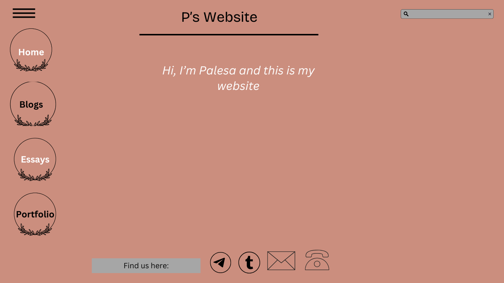

My main focus for my lxd process using HTML are key elements such as user needs, web aesthetics and user usability.
1.I should be able to understand the purpose of my website and what it aims for. Eg: providing information to users and showcasing my portfolio work.
My main users are creatives and people who are beginners in web-development. Users should be able to easily navigate pages and find information without a hassle. 2. My original wireframes focused a lot on the layout and design and have worked well in simplicity and understandable navigation. I need to improve on the call to action, accessibility as well as the mobile friendliness and carefully reconsider the layout and design for the mobile wireframe.In the beginning I struggled with structuring HTML fundamentals correctly as well as keeping a clean structure that correlates and is easy to understand. I had a bit of a confusion with my links as some of the pages were not found but I managed to fix that. I struggled a bit with GitHub as I it not want to commit the changes made but I had that sorted out too. I am proud of the functionality and simplicity of my website and applying HTML skills to my website however, I would want to improve and change my wireframing, design consistency and better my code.
